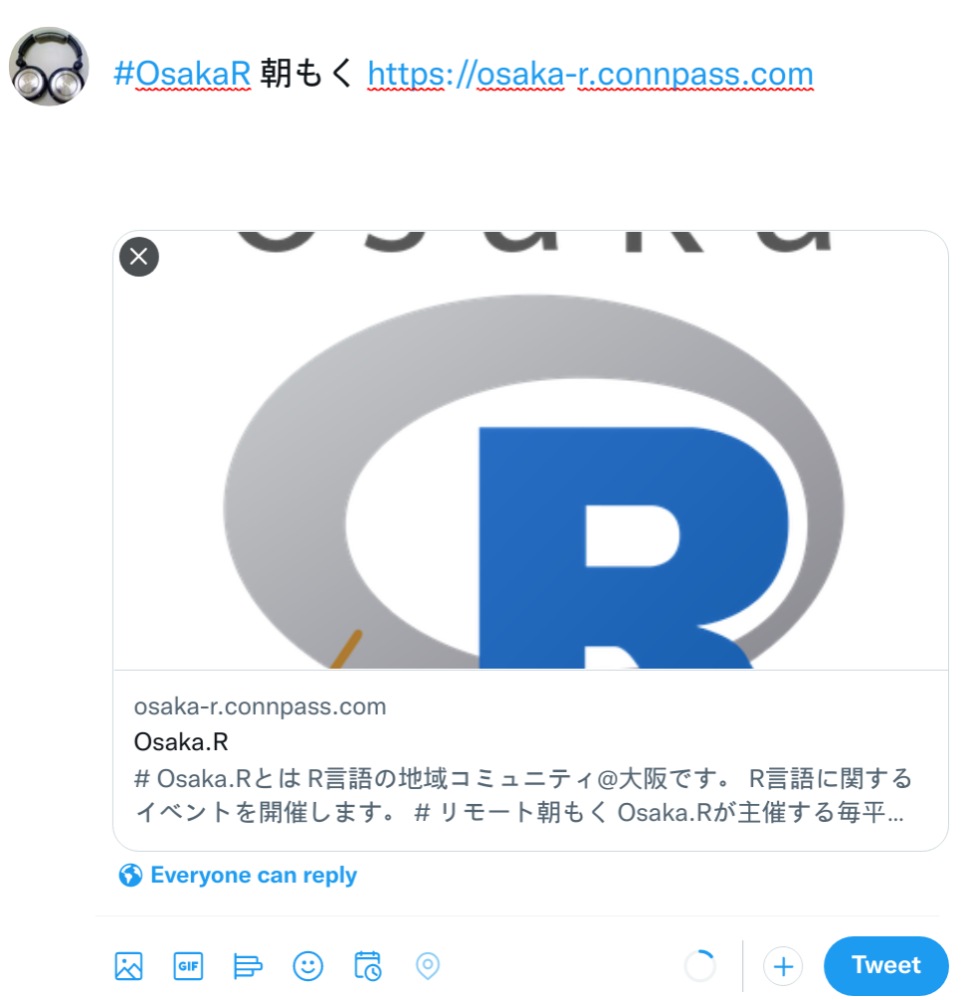

Slackではチャンネル上部に関連ページへのリンクを設置できます。
この機能を使って以下のように、TweetボタンをOsaka.R Slackの朝もくチャンネルに設置しました。
ボタンをクリックすると、以下のように、テンプレート化したテキストをツィートできます。もちろん、朝もくでやる内容など、コメントを追加してもOK。

Tweet用のURLはRで作成しました。以下のコードのURL変数とTEXT変数を調整すると、ご所望のページへのリンクとテキストをテンプレート化したツィート生成リンクを作れます。
URL = "https://osaka-r.connpass.com"
TEXT = "#OsakaR 朝もく"
sprintf(
"https://twitter.com/intent/tweet?url=%s&text=%s",
URLencode(URL, reserved = TRUE),
URLencode(TEXT, reserved = TRUE)
)## [1] "https://twitter.com/intent/tweet?url=https%3A%2F%2Fosaka-r.connpass.com&text=%23OsakaR%20%E6%9C%9D%E3%82%82%E3%81%8F"URLencode関数はURL上で特殊文字を文字列として使いたい時のものです。
reserved = TRUEを指定すると、徹底的にやってくれます。たとえば/はURLで特殊な意味を持ちますが、この関数を使うと%2Fになります。
Enjoy!!